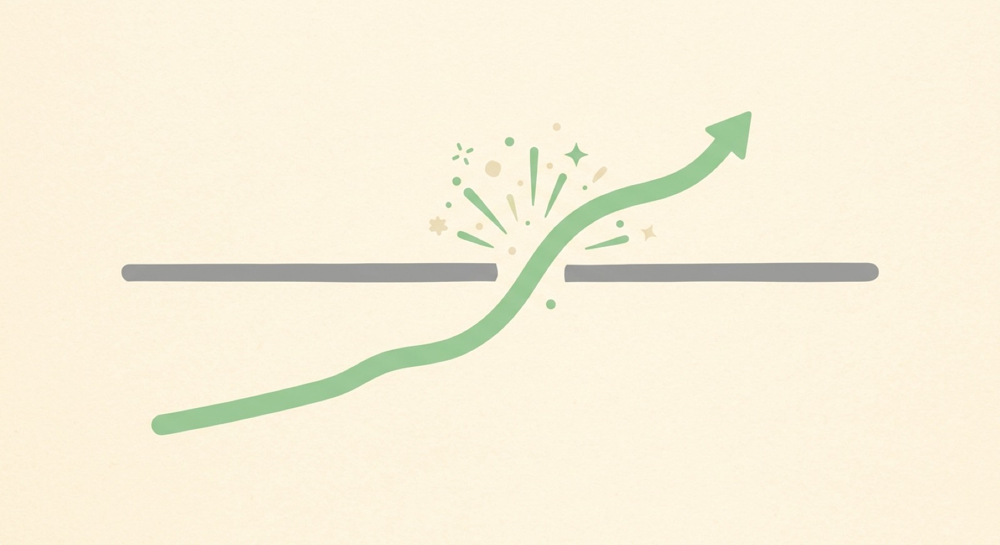
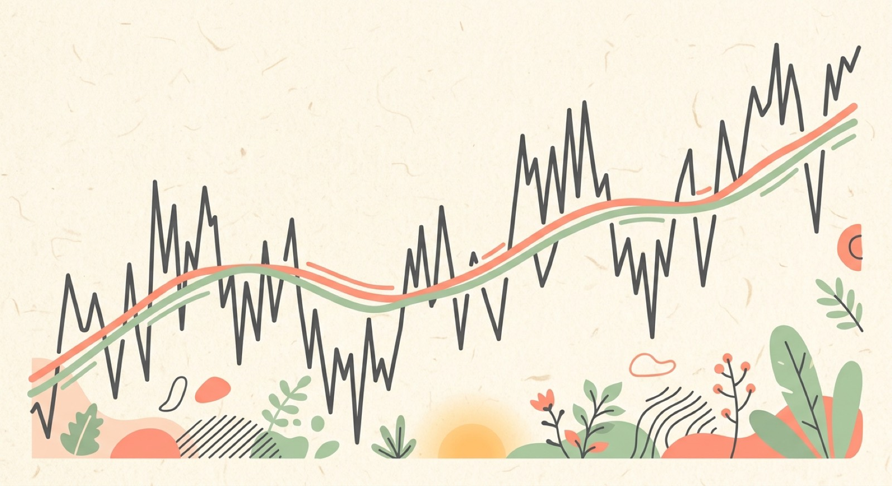
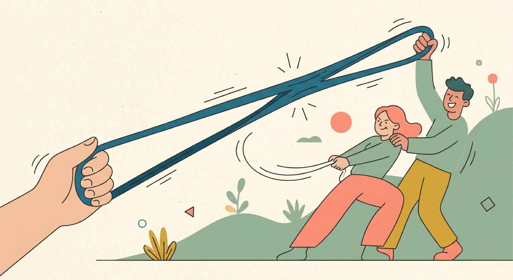
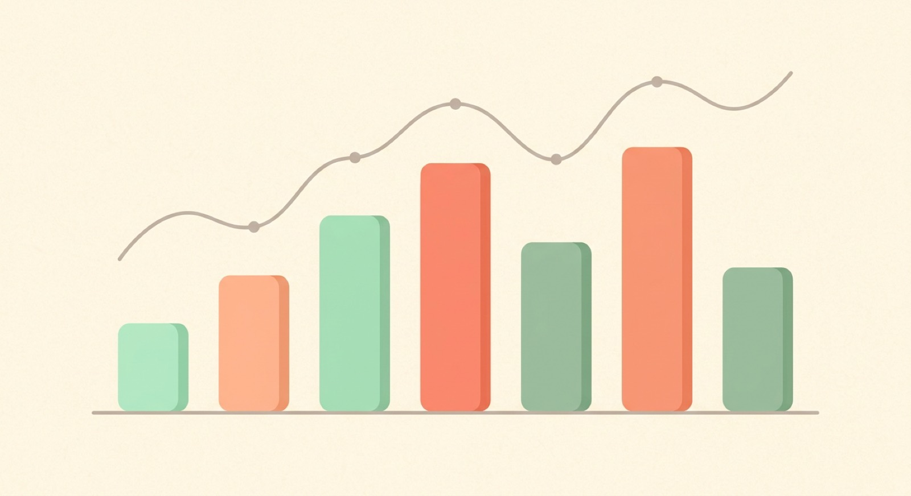

A chart can look like pure noise. But the same shapes show up again and again, because crowds repeat themselves. Learn to name those shapes, then layer a few simple math helpers on top to read what the crowd is really doing.
A pattern is a shape a crowd keeps drawing on a chart. Some flip the trend — a reversal. Some just pause it, then keep going — a continuation.
A double bottom — that W — hints a fall is turning into a rise. A double top — the M — warns a rise may be turning into a drop.
A flag is a tight little pause right after a big move, like the stock catching its breath before it keeps going the same way.
A breakout is price finally punching through a ceiling it was stuck under. It usually unfolds in four beats.
Price squeezes into a tight range, pressing up under the same ceiling.
Buyers push that ceiling again and again, refusing to back off.
Price punches through on a volume surge of +0%.
The crowd piles in behind the move and it extends higher.

A breakout is price finally punching through a ceiling it was stuck under.
Patterns read the shape. Indicators are simple math helpers drawn right on the price to confirm what you're already seeing.

A moving average is the average price drawn as one smooth line.
Stretch price too far, too fast, and momentum gets tight — possibly overbought or oversold — and tends to snap back. RSI measures how stretched it is.
Volume is how many shares actually traded. A move on huge volume has real conviction. The same move on a thin, quiet day is easy to doubt.


I'll describe what price is doing. You tap the pattern that matches. Read the clue, make the call, and see if you nailed it.
Tap a clue to pick it up, then tap the side the crowd is leaning. Some point to the buyers taking over, some to the sellers.
Five questions. Read each one like a real chart in front of you.
Reversal patterns flip the trend; continuation patterns pause it, then it runs.
Double bottom = W (rise); double top = M (drop); flag = pause; breakout = punch through.
Moving average smooths the trend, RSI reads momentum, volume shows conviction.
Patterns and indicators are clues for confirmation, never crystal balls.